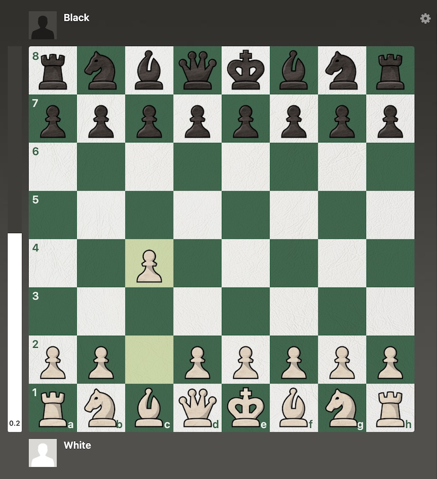

Visual Essay
Different Levels of Openings
Beginner Openings
When you are just starting to play the game, it is a good idea to pick an opening with a minimal amount of theoretical knowledge. Avoiding complex lines that require accurate play will lead to a better development of your middlegame and endgame skills. Try these openings out if you are looking for some openings to get started with.
Wayward Queen Attack: This is one of the most common openings seen at the beginner level. However, many beginners at this level don’t know how to play against it, making it a very dangerous opening.
Italian Game: This is a common opening at the beginner level. This opening is very good because it is one of the oldest, tried, and tested openings in chess.
Scandinavian Defense: This is another common opening at the beginner level. There is very limited theory for this opening, so it is a good choice if you are just getting started.
Intermediate Openings
After you become familiar with the game, you may want to start learning some different openings to bring some variety to your games. Learning some of these openings will allow you to experiment with different kinds of positions and will serve to strengthen your opening and middle game knowledge.
London System: One of my personal favorite openings, the London System is a good opening if you are just starting to learn more opening theory.
French Defense: The French Defense is a solid opening for black. It can be draw-ish sometimes.
Queen’s Gambit: This opening has gained in popularity in recent years because of the hit Netflix show “Queen’s Gambit”. There is a bit more theory than the other two.
Advanced Openings
After you have practiced many different aspects of your chess game, you may want to adventure with some openings that are not as common to catch your opponent by surprise. These openings try to avoid commonly known theory. Try these openings out and see if you can catch them off guard.
English: The English is an unusual, but nonetheless effective opening for white. Some of the lines in the English transpose into Queen’s Gambit or Catalan theory.
Caro-Kann Defense: The Caro-Kann Defense is similar to the French Defense for black. It is a good opening if you want to sidestep a lot of theory in other similar openings.
Expert Openings
Playing these openings in a serious game requires considerable preparation. There is a lot of theory in these lines that make the position very sharp. There are also many variations that can be tricky to navigate. These openings are very rewarding to play, often giving a sizable advantage if played correctly.
Ruy Lopez: A similar opening to the Italian opening, but with the bishop moving one extra square on its diagonal. This subtle difference allows for incredible complications.
Sicilian Defense: One of the most aggressive openings for black, there are countless variations within this opening. There are many different directions to take this opening so games with this opening never get boring.